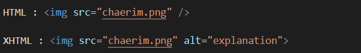

HTML 소개
HTML (Hyper Text Markup Language)은 우리가 보는 웹페이지가 어떻게 구조화되어 있는지 브라우저로 하여금 알 수 있도록 하는 마크업 언어입니다.
HTML은 elements로 구성되어 있으며, 이들은 적절한 방법으로 나타내고 실행하기 위해 각 컨텐츠의 여러 부분들을 tag로 감싸 문서의 구조를 작성합니다.
tags 는 웹 상의 다른 페이지로 이동하게 하는 하이퍼링크 내용들을 생성하거나, 단어를 강조하는 등의 역할을 합니다.
< meta />
< meta />태그는 웹 서버와 웹 브라우저간에 상호 교환되는 정보를 정의하는데 사용합니다.
| 속성 | 의미 | 값 |
|---|---|---|
| charset | 문자인코딩 방식 | UTF-8, EUC-KR… |
| name | 정보이름으로, 몇개의 meta 정보의 이름을 정할 수 있으며 지정하지 않으면 http-equiv와 같은 기능을 합니다. | autdor, description… |
| http-equiv | 웹 브라우저가 서버에 내리는 속성으로 name 속성을 대신하여 사용될 수 있으며, HTML 문서가 응답 헤더와 함께 웹 서버로부터 웹 브라우저에 전송되었을 때에만 의미를 갖습니다. | Copyright, X-UA-Compatible… |
| content | meta 정보의 내용을 지정합니다. |

Viewport 설정

HTML과 XHTML
XHTML은 HTML과 거의 비슷하지만, 기존에 사용되던 HTML 규격이 가진 문제점을 극복하고, 보다 다양한 분야에 응용될 수 있도록 해주는 여러가지 확장된 기능을 포함하고 있습니다.
HTML과의 차이점
1. 종료 태그가 없는 빈 태그는 반드시 끝에 공백과 함께 슬래시(/)를 붙여야 합니다.
2. 비어있지 않은 요소는 반드시 종료 태그를 가져야 합니다.
3. 요소들은 반드시 열린 순서대로 닫혀야 합니다.
4. 태그에는 반드시 alt 속성이 기술되어야 합니다.

5. 모든 텍스트(text)는 반드시 태그로 감싸야 합니다.
6. 속성값은 반드시 따옴표로 감싸야 합니다.
7. 태그 이름이나 속성 이름에는 반드시 소문자만을 사용해야 합니다.
8. 속성값 생략이 없어졌으므로, 반드시 속성값을 명시해야 합니다.
html의 요소와 속성
메인 루트
| Element | Description |
|---|---|
| <HTML> | <html> 요소는 HTML 문서의 루트(최상단 요소)를 나타내며, "루트 요소"라고도 부릅니다. 모든 다른 요소는 <html> 요소의 후손이어야 합니다. |
문서 메타데이터
| Element | Description |
|---|---|
| <base> | 문서 안의 모든 상대 URL이 사용할 기준 URL을 지정합니다. 문서에는 하나의 <base> 요소만 존재할 수 있습니다. |
| <head> | 기계가 식별할 수 있는 문서 정보(메타데이터)를 담습니다. 정보로는 문서가 사용할 제목, 스크립트, 스타일 시트 등이 있습니다. |
| <link> | 현재 문서와 외부 리소스의 관계를 명시합니다. <link>는 CSS를 연결할 때 제일 많이 사용하지만, 사이트 아이콘("파비콘"과 홈 화면 아이콘) 연결 등 여러가지로 쓰일 수 있습니다. |
| <meta> | base, link, script, style, title과 같은 다른 메타관련 요소로 나타낼 수 없는 Metadata를 나타냅니다. |
| <style> | 문서나 문서 일부에 대한 스타일 정보를 포함합니다. |
| <title> | 브라우저의 제목 표시줄이나 페이지 탭에 보이는 문서 제목을 정의합니다. |
구획 루트
| Element | Description |
|---|---|
| <body> | HTML 문서의 내용을 나타냅니다. 한 문서에 하나의 <body> 요소만 존재할 수 있습니다. |
콘텐츠 구획
| Element | Description |
|---|---|
| <address> | 가까운 HTML 요소의 사람, 단체, 조직 등에 대한 연락처 정보를 나타냅니다. |
| <article> | 문서, 페이지, 애플리케이션, 또는 사이트 안에서 독립적으로 구분해 배포하거나 재사용할 수 있는 구획을 나타냅니다. |
| <aside> | 문서의 주요 내용과 간접적으로만 연관된 부분을 나타냅니다. 주로 사이드바 혹은 콜아웃 박스로 표현합니다. |
| <footer> | 가장 가까운 구획 콘텐츠나 구획 루트의 푸터를 나타냅니다. 푸터는 일반적으로 구획의 작성자, 저작권 정보, 관련 문서 등의 내용을 담습니다. |
| <header> | 소개 및 탐색에 도움을 주는 콘텐츠를 나타냅니다. 제목, 로고, 검색 폼, 작성자 이름 등의 요소도 포함할 수 있습니다. |
| <h2~h6> | 6단계의 구획 제목을 나타냅니다. 구획 단계는 <h2>이 가장 높고 <h6>은 가장 낮습니다. |
| <main> | 문서 body의 주요 콘텐츠를 나타냅니다. 주요 콘텐츠 영역은 문서의 핵심 주제나 앱의 핵심 기능에 직접적으로 연결됐거나 확장하는 콘텐츠로 이루어집니다. |
| <nav> | 문서의 부분 중 현재 페이지 내, 또는 다른 페이지로의 링크를 보여주는 구획을 나타냅니다. 자주 쓰이는 예제는 메뉴, 목차, 색인입니다. |
| <section> | HTML 문서의 독립적인 구획을 나타내며, 더 적합한 의미를 가진 요소가 없을 때 사용합니다. |
텍스트 콘텐츠
| Element | Description |
|---|---|
| <blockquote> | 안쪽의 텍스트가 긴 인용문임을 나타냅니다. 주로 들여쓰기를 한 것으로 그려집니다. (외형을 바꾸는 법은 사용 일람을 참고하세요) 인용문의 출처 URL은 cite 특성으로, 출처 텍스트는 cite 요소로 제공할 수 있습니다. |
| <dd> | 정의 목록 요소(dl)에서 앞선 용어(dt)에 대한 설명, 정의, 또는 값을 제공합니다. |
| <div> | 플로우 콘텐츠를 위한 통용 컨테이너입니다. CSS로 꾸미기 전에는 콘텐츠나 레이아웃에 어떤 영향도 주지 않습니다. |
| <dl> | 설명 목록을 나타냅니다. <dl>은 dt로 표기한 용어와 dd 요소로 표기한 설명 그룹의 목록을 감싸서 설명 목록을 생성합니다. 주로 용어사전 구현이나 메타데이터(키-값 쌍 목록)를 표시할 때 사용합니다. |
| <dt> | 설명 혹은 정의 리스트에서 용어를 나타냅니다. dl 요소 안에 위치해야 합니다 |
| <figcaption> | 부모 figure 요소가 포함하는 다른 콘텐츠에 대한 설명 혹은 범례를 나타냅니다. |
| <figure> | 독립적인 콘텐츠를 표현합니다. figcaption 요소를 사용해 설명을 붙일 수 있습니다. |
| <hr> | 이야기 장면 전환, 구획 내 주제 변경 등, 문단 레벨 요소에서 주제의 분리를 나타냅니다. |
| <li> | 목록의 항목을 나타냅니다. |
| <ol> | 정렬된 목록을 나타냅니다. 보통 숫자 목록으로 표현합니다. |
| <p> | 하나의 문단을 나타냅니다. |
| <pre> | 미리 서식을 지정한 텍스트를 나타내며, HTML에 작성한 내용 그대로 표현합니다. |
| <ul> | 정렬되지 않은 목록을 나타냅니다. 보통 불릿으로 표현합니다. |
인라인 텍스트 시멘틱
| Element | Description |
|---|---|
| <a> | href 특성을 통해 다른 페이지나 같은 페이지의 어느 위치, 파일, 이메일 주소와 그 외 다른 URL로 연결할 수 있는 하이퍼링크를 만듭니다. |
| <abbr> | 준말 또는 머리글자를 나타냅니다. |
| <b> | 독자의 주의를 요소의 콘텐츠로 끌기 위한 용도로 사용합니다. 그 외의 다른 특별한 중요도는 주어지지 않습니다. |
| <bdo> | 현재 텍스트의 쓰기 방향을 덮어쓰고 다른 방향으로 렌더링 할 때 사용합니다. |
| <br> | 텍스트 안에 줄바꿈(캐리지 리턴)을 생성합니다. 주소나 시조 등 줄의 구분이 중요한 내용을 작성할 때 유용합니다. |
| <cite> | 저작물의 출처를 표기할 때 사용하며, 제목을 반드시 포함해야 합니다. |
| <code> | 짧은 코드 조각을 나타내는 스타일을 사용해 자신의 콘텐츠를 표시합니다. |
| <data> | 주어진 콘텐츠를 기계가 읽을 수 있는 해석본과 연결합니다. |
| <dfn> | 현재 맥락이나 문장에서 정의하고 있는 용어를 나타냅니다. |
| <em> | 텍스트의 강세를 나타냅니다. <em> 요소를 중첩하면 더 큰 강세를 뜻하게 됩니다. |
| <i> | 텍스트에서 어떤 이유로 주위와 구분해야 하는 부분을 나타냅니다. |
| <kbd> | 키보드 입력, 음성 입력 등 임의의 장치를 사용한 사용자의 입력을 나타냅니다. |
| <mark> | 현재 맥락에 관련이 깊거나 중요해 표시 또는 하이라이트한 부분을 나타냅니다. |
| <q> | 둘러싼 텍스트가 짧은 인라인 인용문이라는것을 나타냅니다. |
| <rb> | ruby 표기의 기반 텍스트 구성요소(루비 주석을 적용하려는 글자)를 나눌 때 사용합니다. |
| <rp> | ruby 요소를 사용한 루비 주석을 지원하지 않는 경우 보여줄 괄호를 제공할 때 사용합니다. |
| <rt> | 동아시아 문자의 루비 주석에서 발음, 번역 등을 나타내는 텍스트 부분을 지정합니다. |
| <rtc> | rb 요소가 표시하는 문자의 의미에 대한 주석을 나타냅니다. |
| <ruby> | 루비 주석을 나타냅니다. 루비 주석은 동아시아 문자의 발음을 표기할 때 사용합니다. |
| <s> | 글자에 취소선, 즉 글자를 가로지르는 선을 그립니다. |
| <samp> | 컴퓨터 프로그램 출력의 예시(혹은 인용문)를 나타냅니다. |
| <small> | 덧붙이는 글이나, 저작권과 법률 표기 등의 작은 텍스트를 나타냅니다. |
| <span> | 구문 콘텐츠를 위한 통용 인라인 컨테이너로, 본질적으로는 아무것도 나타내지 않습니다. 스타일을 적용하기 위해서, 또는 lang 등 어떤 특성의 값을 서로 공유하는 요소를 묶을 때 사용할 수 있습니다. |
| <strong> | 중대하거나 긴급한 콘텐츠를 나타냅니다. 보통 브라우저는 굵은 글씨로 표시합니다. |
| <sub> | 활자 배치를 아래 첨자로 해야 하는 인라인 텍스트를 지정합니다. |
| <sup> | 활자 배치를 위 첨자로 해야 하는 인라인 텍스트를 지정합니다. |
| <time> | 시간의 특정 지점 또는 구간을 나타냅니다. |
| <u> | 글자로 표현하지 않는 주석을 가진 것으로 렌더링 해야 하는 텍스트를 나타냅니다. |
| <let> | 수학 표현 또는 프로그래밍에서 변수의 이름을 나타냅니다. |
| <wbr> | 현재 요소의 줄 바꿈 규칙을 무시하고 브라우저가 줄을 바꿀 수 있는 위치를 나타냅니다. |
이미지 & 멀티미디어
| Element | Description |
|---|---|
| <area> | 이미지의 핫스팟 영역을 정의하고 hyperlink를 추가할 수 있습니다. map 요소 안에서만 사용할 수 있습니다. |
| <audio> | 문서에 소리 콘텐츠를 포함할 때 사용합니다. |
| <img> | 문서에 이미지를 넣습니다. |
| <map> | area 요소와 함께 이미지 맵(클릭 가능한 링크 영역)을 정의할 때 사용합니다. |
| <track> | 미디어 요소(audio, video)의 자식으로서, 자막 등 시간별 텍스트 트랙(시간 기반 데이터)를 지정할 때 사용합니다. |
| <video> | 비디오 플레이백을 지원하는 미디어 플레이어를 문서에 삽입합니다. |
내장 콘텐츠
| Element | Description |
|---|---|
| <embed> | 외부 어플리케이션이나 대화형 컨텐츠와의 통합점을 나타냅니다. |
| <iframe> | 중첩 browsing context을 나타내는 요소로, 현재 문서 안에 다른 HTML 페이지를 삽입합니다. |
| <object> | 이미지나, 중첩된 브라우저 컨텍스트, 플러그인에 의해 다뤄질수 있는 리소스와 같은 외부 리소스를 나타냅니다. |
| <param> | object 요소의 매개변수를 정의합니다. |
스크립트
| Element | Description |
|---|---|
| <canvas> | 캔버스 스크립팅 API 또는 WebGL API와 함께 사용해 그래픽과 애니메이션을 그릴 수 있습니다. |
| <noscript> | 페이지의 스크립트 유형을 지원하지 않거나, 브라우저가 스크립트를 비활성화한 경우 보여줄 HTML 구획을 정의합니다. |
| <script> | 데이터와 실행 가능한 코드를 문서에 포함할 때 사용하며 보통 JavaScript 코드와 함께 씁니다. |
수정사항 표시
| Element | Description |
|---|---|
| <del> | 문서에서 제거된 텍스트의 범위를 나타냅니다. |
| <ins> | 문서에 추가된 텍스트의 범위를 나타냅니다. |
표 콘텐츠
| Element | Description |
|---|---|
| <caption> | 표의 설명 또는 제목을 나타냅니다. |
| <col> | 표의 열을 나타내며, 열에 속하는 칸에 공통된 의미를 부여할 때 사용합니다. |
| <colgroup> | 표의 열을 묶는 그룹을 정의합니다. |
| <table> | 행과 열로 이루어진 표를 나타냅니다. |
| <tbody> | 표의 여러 행(tr)을 묶어서 표 본문을 구성합니다. |
| <td> | 데이터를 포함하는 표의 셀을 정의합니다. 이것은 표 모델에 참여합니다. |
| <td> | 셀을 테이블 셀 그룹의 헤더로 정의합니다. 이 그룹의 정확한 특성은 범위 및 헤더 속성에 의해 정의됩니다. |
| <tdead> | 테이블 열의 헤드를 정의하는 행 세트를 정의합니다. |
| <tr> | 테이블의 셀 행을 정의합니다. 그것들은 td와 td 요소의 혼합 일 수 있습니다. |
양식
| Element | Description |
|---|---|
| <button> | 클릭 가능한 버튼을 나타냅니다. 버튼은 양식 내부는 물론 간단한 표준 버튼 기능이 필요한 곳이라면 문서 어디에나 배치할 수 있습니다. |
| <detailst> | 다른 컨트롤에서 고를 수 있는 가능한, 혹은 추천하는 선택지를 나타내는 option 요소 여럿을 담습니다. |
| <fieldset> | 웹 양식의 여러 컨트롤과 레이블(label)을 묶을 때 사용합니다. |
| <form> | 정보를 제출하기 위한 대화형 컨트롤을 포함하는 문서 구획을 나타냅니다. |
| <input> | 웹 기반 양식에서 사용자의 데이터를 받을 수 있는 대화형 컨트롤을 생성합니다. |
| <label> | 사용자 인터페이스 항목의 설명을 나타냅니다. |
| <legend> | 부모 fieldset 콘텐츠의 설명을 나타냅니다. |
| <meter> | 특정 범위 내에서의 스칼라 값, 또는 백분율 값을 나타냅니다. |
| <optgroup> | select 요소의 옵션을 묶을 수 있습니다. |
| <option> | select, optgroup, datalist 요소의 항목을 정의합니다. |
| <output> | 웹 사이트나 앱에서 계산이나 사용자 행동의 결과를 삽입할 수 있는 컨테이너 요소입니다. |
| <progress> | 어느 작업의 완료 정도를 나타내며, 주로 진행 표시줄의 형태를 띕니다. |
| <select> | 옵션 메뉴를 제공하는 컨트롤을 나타냅니다. |
| <textarea> | 멀티라인 일반 텍스트 편집 컨트롤을 나타냅니다. |
대화형 요소
| Element | Description |
|---|---|
| <details> | "열림" 상태일 때만 내부 정보를 보여주는 정보 공개 위젯을 생성합니다. |
| <dialog> | 닫을 수 있는 경고, 검사기, 창 등 대화 상자 및 기타 다른 상호작용 가능한 컴포넌트를 나타냅니다. |
| <menu> | 사용자가 수행하거나 하는 명령 묶음을 말합니다. 이것은 스크린 위에 나오는 목록 메뉴와 눌려진 버튼 아래에 나오는 것과 같은 맥락 메뉴를 포함합니다. |
| <summary> | (<요약>) 요소는 ("상세") 요소의 공개 상자에 대한 요약, 캡션 또는 범례를 지정합니다. |
웹 컴포넌트
| Element | Description |
|---|---|
| <slot> | 웹 컴포넌트 사용자가 자신만의 마크업으로 채워 별도의 DOM 트리를 생성하고, 컴포넌트와 함께 표현할 수 있는 웹 컴포넌트 내부의 플레이스홀더입니다. |
| <template> | 페이지를 불러온 순간 즉시 그려지지는 않지만, 이후 JavaScript를 사용해 인스턴스를 생성할 수 있는 HTML 코드를 담을 방법을 제공합니다. |
CSS 프로퍼티 선언 순서(Mozilla 참고)
- display --객체의 노출여부/표현방식--
- list-style
- position --위치/좌표--
- float
- clear
- width/height --크기/여백--
- padding/margin
- border/background --윤곽/배경--
- color/font --글자/정렬--
- text-decoration
- text-align/vertical-align
- white-space
- other text
- content --내용--

Namimg Guide
(쓰여진 위치) + (컴포넌트) + (용도) 와 같이 Class와 Image명으로 동일하게 구성하고 정렬한다면 불필요한 작업을 최소화시킬 수 있습니다.
Naming 예시